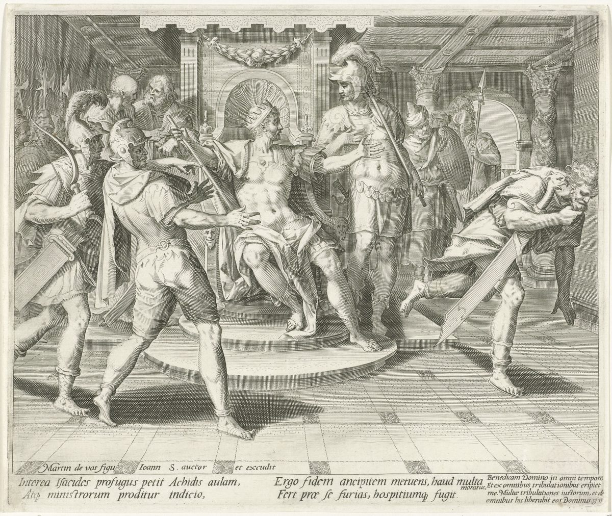

Psalm 56 — The Mister Translation

The story behind Psalm 56’s heading, “when the Philistines seized him in Gath”: David, recognized by the servants of Achish, plays the madman and gets away. The Latin verses say that the son of Jesse, a fugitive, came to the court of Achish, was betrayed by the report of the servants, and, fearing a welcome that could turn either way, put on a frenzy and fled. The quotation in the corner is from Psalm 34 (Psalm 33 in the Latin numbering), whose heading tells the same story.

Translator's Notes — verse by verse
The heading. “For the director. On ‘The Silent Dove of the Far-off Ones’. Of David. A miktam. When the Philistines seized him in Gath”: the heading is verse 1 in the Hebrew, so every verse on this page is one number ahead of an English Bible, as in Psalm 34 (already on these pages). “For the director”, lamnatseach, stands at the head of Psalm 46 and Psalm 51 too (both already on these pages). The words after it, al-yonat elem rechoqim, are most often taken as the name of a tune the psalm was sung to: yonah is a dove, elem silence, and rechoqim far-off ones or far places. The psalm before this one wishes for “wings like a dove” and says “I would wander far off” (Psalm 55:7–8 in the Hebrew numbering), with the same word for dove and the root of rechoqim. The Greek read other words in the same letters, “on behalf of the people removed far from the holy things”. The ASV keeps the Hebrew, “set to Jonath elem rehokim”; the KJV runs it together, “upon Jonathelemrechokim”; the Douay, from the Latin, has “for a people that is removed at a distance from the sanctuary”.
A miktam. Miktam is a word whose meaning is not known. It heads six psalms, 16 and 56 to 60, all of them “of David”. One guess connects it with ketem, fine gold, and makes it “a golden psalm”; another, older one is the Greek’s, which has eis stēlographian, “for an inscription on a pillar”. The Douay has “for an inscription of a title (or pillar)”; the ASV and KJV keep “Michtam”. This translation keeps the Hebrew word, as at every heading term whose sense is lost.
At Gath. “When the Philistines seized him in Gath”: be-echoz oto, “when they took hold of him”. The story of David at Gath tells that he fled from Saul to Achish king of Gath, that the king’s servants knew him as the David of the song “Saul has struck down his thousands”, that David “was very afraid of Achish”, and that he played the madman “in their hands” until he was let go (1 Samuel 21:11–16 in the Hebrew numbering). It does not say he was arrested, but “in their hands” is the language of being in someone’s power, and the heading says it outright. Psalm 34’s heading (already on these pages) points to the same days. The fear of the story comes back in verse 4 with the same verb. The ASV and KJV have “when the Philistines took him in Gath”; the Douay “when the Philistines held him in Geth”.
Be gracious to me. “Be gracious to me, God”: chonneni Elohim, from chanan, to show favor freely. It is the first word of Psalm 51:3 (already on these pages) and of Psalm 57:2, the next psalm; as a plea, “be gracious to me, God” stands in three verses of the Hebrew Bible. The ASV has “Be merciful unto me, O God”; the NWT 1984 “Show me favor, O God”; the Douay “Have mercy on me, O God”.
Panting after him. “For a mortal pants after me”: sha’af is to pant or gasp, the verb of “I opened my mouth wide and panted” (Psalm 119:131, already on these pages); here it is the panting of a hunter close behind, and it comes back in verse 3. The man is enosh, humankind in its frailty, the word of “As for mortal man, his days are like grass” (Psalm 103:15, already on these pages). “All day long, fighting, he oppresses me”: lochem, warring, and lachats, the verb of pressing and squeezing that names Egypt’s oppression (Exodus 3:9, already on these pages). The old versions took sha’af as swallowing: the ASV has “for man would swallow me up: All the day long he fighting oppresseth me”, and the Geneva the same “would swallow me up”. The Greek has “trampled”, a sense some lexicons give these letters in Amos 2:7, and so the Douay “for man hath trodden me under foot”. The NWT 1984 has “because mortal man has snapped at me”; the NIV “for my enemies are in hot pursuit”.
The watchers, and the height. “Those who lie in wait for me pant after me all day long”: shoreray, those who watch me with hostile eyes, the word that ends Psalm 27:11, “because of those who lie in wait for me” (already on these pages). “For many fight against me haughtily”: the last word is marom, height, and readings differ on what it is doing. It can say how they fight, from on high, that is haughtily: the ASV has “For they are many that fight proudly against me”; the NWT 1984 “For there are many warring against me high-mindedly”; the NIV “in their pride many are attacking me”. It can be a name of God, as in “But you are on high forever, Jehovah” (Psalm 92:9 in the Hebrew numbering): the KJV has “for they be many that fight against me, O thou most High”, and the Geneva “O thou most High”. Or it can begin the next line, as the Greek takes it, “from the height of the day I shall fear”, the words that open the next verse in the Douay-Rheims.
Afraid, and trusting. “On the day I am afraid, I will trust in you”: yom ira, ani elekha evtach, “the day I fear, I, in you I will trust”, with the “I” set apart for emphasis. The verb of fear is yare, the verb of the story at Gath, where David “was very afraid of Achish” (1 Samuel 21:13 in the Hebrew numbering). The verb of trust is batach, to lean one’s weight on something, and the psalm says it three times. The ASV has “What time I am afraid, I will put my trust in thee”; the NWT 1984, keeping the emphatic pronoun, “Whatever day I get afraid, I, for my part, shall trust even in you”; the Geneva puts it in the past, “When I was afraid, I trusted in thee”.
The refrain. “In God — I will praise his word — in God I trust; I will not be afraid. What can flesh do to me?”: this verse comes back, longer, in verses 11 and 12, and the psalm turns on it. The middle words break into the sentence, which the ASV marks with brackets, “In God (I will praise his word), In God have I put my trust, I will not be afraid; What can flesh do unto me?” Basar, flesh, is humanity as weak and passing, as in “All flesh is grass” (Isaiah 40:6, already on these pages); verse 12 asks the same question with adam, a human. The KJV turns the question into a statement, “I will not fear what flesh can do unto me”; the NIV has “What can mere mortals do to me?” The Greek reads “In God I will praise my words”, and so the Douay.
The question again, elsewhere. Psalm 118:6 asks it with the name and with adam: “Jehovah is for me; I will not be afraid. What can a human do to me?” That is the verse quoted in Hebrews 13:6 (already on these pages), “Jehovah is my helper; I will not be afraid. What will man do to me?”, from the Greek Psalter. Psalm 56 has the same question twice and, in verse 10, the same “for me”.
Distorted words. “All day long they distort my words”: the verb is atsav, which most often means to hurt or grieve, as when it “grieved him to his heart” (Genesis 6:6, already on these pages), and once means to shape, “Your hands shaped me” (Job 10:8). This translation takes the second sense, words bent out of their shape. The word for “words” is devarim, which is also “matters” or “affairs”, and the NWT 1984 takes both the other way: “All day long they keep hurting my personal affairs”. The ASV has “All the day long they wrest my words”; the NIV “they twist my words”; the Geneva “Mine own words grieve me daily”; the Douay, from the Greek, “they detested my words”. “All their thoughts are against me for evil”: the verb of thinking and the words “against me” and “evil” are those of Joseph to his brothers, “you devised evil against me” (Genesis 50:20, already on these pages).
Strife, lurking, and heels. “They stir up strife”: yaguru, from gur. The same letters make three verbs: to sojourn as a stranger, to dread, and to stir up strife, which is the sense here and in Isaiah 54:15. The Greek took it as sojourning, as it did in Psalm 34:5 (already on these pages), and so the Douay has “They will dwell and hide themselves”. The NWT 1984 has “They attack, they conceal themselves”; the ASV “They gather themselves together, they hide themselves”. “They lurk”: here the scribes kept two forms. The letters written in the text are יצפינו, a causative, “they hide [something]”, as a trap is hidden; the reading tradition reads יצפונו, “they hide themselves”. This translation prints the read form, as at Psalm 100:3 (already on these pages). “They watch my heels”: akevai, the heel of the first promise, “you will strike his heel” (Genesis 3:15, already on these pages): they follow close enough to tread on them. The NIV has “they watch my steps”; the ASV “They mark my steps”; the Douay keeps the heel, “they will watch my heel”. “As they have waited for my life”: nafshi, my life, the self they want to end. The ASV has “Even as they have waited for my soul”; the NIV “hoping to take my life”.
Escape for them? “For iniquity, is there escape for them?”: four Hebrew words, al-aven pallet-lamo, “on account of iniquity, deliverance for them”, and the versions part. Aven is iniquity, as in “He has not looked on iniquity in Jacob” (Numbers 23:21, already on these pages); pallet is from the verb of escaping and of bringing to safety. Read as an indignant question, which is how this translation takes it, it asks whether wrongdoing can be their way out: the ASV and KJV have “Shall they escape by iniquity?”, and the Geneva “They think they shall escape by iniquity”. Read as a prayer with a negative understood, it asks God not to rescue them: the NIV has “do not let them escape”. The NWT 1984 has “On account of [their] hurtfulness cast them forth”. The Greek has “for nothing you will save them”, as if the first word were ein, nothing, one letter away from aven, and so the Douay “For nothing shalt thou save them”. “In anger bring down the peoples, God”: be-af, with the nose, the Hebrew seat of anger. The ASV has “In anger cast down the peoples, O God”; the NWT 1984 “In anger bring down even the peoples, O God”.
My wandering. “You yourself have counted my wandering”: nodi, from nud, to wander, the root of Cain’s sentence, “You will be a restless wanderer on the earth”, and of the land he settled in, Nod, the land of Wandering (Genesis 4:12 and 4:16, already on these pages). For David the wandering is a fugitive’s, from Saul to Gath and beyond. The same verb also means to shake the head over someone in sympathy, as Job’s friends came “to console him” (Job 2:11), and the NIV takes that sense, “Record my misery”. The ASV has “Thou numberest my wanderings”; the KJV “Thou tellest my wanderings”, “tell” in its old sense of count; the NWT 1984 “My being a fugitive you yourself have reported”. The Greek has “my life I have declared to you”, and so the Douay “I have declared to thee my life”.
The skin bottle. “Put my tears in your skin bottle”: no’d is a bag sewn from an animal’s skin, for wine or milk or water. It stands in six verses of the Hebrew Bible: the Gibeonites’ worn-out wineskins (Joshua 9:4 and 9:13), the skin of milk Jael opened for Sisera (Judges 4:19), the skin of wine Jesse sent to Saul by David’s hand (1 Samuel 16:20), “like a wineskin in the smoke” (Psalm 119:83; all already on these pages), and here. The tears are dim’ati, singular, “my tear”, the whole weeping as one thing. Small glass flasks found in Roman tombs were long called lachrymatories, tear bottles, with this verse in mind; they are now generally taken to be flasks for perfumes and ointments (reported, not checked here). The ASV has “Put thou my tears into thy bottle”; the NWT 1984 “Do put my tears in your skin bottle”; the TLB “You have collected all my tears and preserved them in your bottle!” The Greek has “you have set my tears before you”, as if the word were negdekha, before you, and so the Douay “thou hast set my tears in thy sight”.
Counted, and recorded. “Are they not in your record?”: be-sifratekha, from safar, to count, the root of sefer, a book. This noun stands in one verse of the Hebrew Bible, this one. The line is built on two pairs of sounds that English cannot keep: nodi, my wandering, and no’dekha, your skin bottle; safarta, you have counted, and sifratekha, your record. God counts the wandering and keeps the tears, and the counting is already written down, as in “in your book all of them were written” (Psalm 139:16, already on these pages). The ASV has “Are they not in thy book?”; the NIV “list my tears on your scroll — are they not in your record?”; the Geneva “are they not in thy register?”; the Douay, from the Greek, “As also in thy promise”.
God is for me. “Then my enemies will turn back, on the day I call”: the day of verse 4, the day of fear, has become the day of calling. “This I know: that God is for me”: ki-Elohim li, “that God is mine”, three Hebrew words, which Psalm 118:6 has with the name, “Jehovah is for me”. Paul’s question, “If God is for us, who is against us?” (Romans 8:31, already on these pages), says the same in the plural; the Greek of this psalm reads differently, “that you are my God”, so Paul is not quoting it. The ASV has “Then shall mine enemies turn back in the day that I call: This I know, that God is for me”; the NWT 1984 “This I well know, that God is for me”; the Geneva “for God is with me”; the Douay, from the Greek, “behold I know thou art my God”.
The refrain with the name. “In God — I will praise the word — in Jehovah — I will praise the word —”: the refrain of verse 5 comes back with a second line, and the name Jehovah stands in it, the only time the name is used in this psalm. Psalms 42 to 83 are often called the Elohistic Psalter, because in them “God” usually stands where other psalms have the name. The word is davar, “the word”, without the “his” of verse 5. The NWT 1984 supplies it in brackets, “In union with Jehovah I shall praise [his] word”; the ASV has “In Jehovah (I will praise his word)”; the NIV “whose word I praise”; the Douay, from the Greek, “in the Lord will I praise his speech”.
Flesh, and a human. “In God I trust; I will not be afraid. What can a human do to me?”: the question of verse 5 again, with adam in place of basar, flesh; the two words for humankind are kept apart here as the Hebrew keeps them. The ASV has “What can man do unto me?”; the NWT 1984, which keeps adam as earthling throughout, “What can earthling man do to me?”; the Geneva “I will not be afraid what man can do unto me”.
Vows and thank offerings. “Your vows are upon me, God”: nedarekha, “your vows”, the vows made to you, which now lie on the one who made them like a debt. A neder must be paid: “When you vow a vow to Jehovah your God, you shall not delay to pay it” (Deuteronomy 23:22, already on these pages). “I will pay thank offerings to you”: ashallem, from shalem, the verb of paying in full, and todot, the plural of todah, the thank offering of the law, “the sacrifice of thanksgiving” (Leviticus 7:12), which gives Psalm 100 its heading (both already on these pages). The ASV has “Thy vows are upon me, O God: I will render thank-offerings unto thee”; the KJV “I will render praises unto thee”; the NWT 1984 “I shall render expressions of thanksgiving to you”; the NIV “I am under vows to you, my God”.
Death, and stumbling. “For you have delivered my life from death”: hitsalta, from natsal, to snatch away. “Have you not delivered my feet from stumbling?”: the Hebrew leaves the verb out of the second half and the question supplies it. Mi-dechi, “from stumbling”, stands in two verses of the Hebrew Bible, here and Psalm 116:8, which says this verse over again with tears in it: “you have rescued my soul from death, my eye from tears, my foot from stumbling”, and goes on, “I will walk before Jehovah in the lands of the living”. The ASV has “Hast thou not delivered my feet from falling”; the NWT 1984 “[Have you] not [delivered] my feet from stumbling?”; the NIV “and my feet from stumbling”.
Walking before God. “So that I may walk before God”: lehithallekh, the verb of hithalekh, walking about, and the command to Abram, “Walk before me, and be blameless” (Genesis 17:1, already on these pages). The Greek turns this verb, here as in Genesis 17:1 and as of Enoch, who “walked with God” (Genesis 5:22), into euarestein, to be pleasing; that Greek is where Hebrews 11:5 gets its “he had been attested as having pleased God” (both already on these pages). So the Douay has “that I may please in the sight of God”. “In the light of the living”: be-or ha-chayyim stands in two verses of the Hebrew Bible, here and Job 33:30; Psalm 27:13 (already on these pages) has “the land of the living”. The NWT 1984 has “That [I] may walk about before God in the light of those alive”; the NIV “in the light of life”; the TLB “in the land of the living”.
Patterns worth carrying forward
Where this translation keeps the words exact and distinct: the heading counted as verse 1, as the Hebrew counts it; “Be gracious to me, God”, as in Psalm 51:3; “pants after” for sha’af in verses 2 and 3 alike, as in Psalm 119:131; “a mortal” for enosh, as in Psalm 103:15; “those who lie in wait for me”, as in Psalm 27:11; “afraid” and “trust” the same in every line of the refrain; “flesh” and “a human” kept apart in verses 5 and 12; the read form “they lurk”, with the written form in the note, as at Psalm 100:3; “iniquity” for aven, as in Numbers 23:21; “skin bottle” for no’d; “thank offerings” for todot, as in Leviticus 7:12; and “walk before God”, as in Genesis 17:1.
Echoes paid. David among the Philistines, already in Psalm 34’s heading; the dove and the far-off places; the plea of Psalm 51; panting from Psalm 119; the mortal of Psalm 103; the watchers of Psalm 27; all flesh as grass from Isaiah 40; evil devised against Joseph (Genesis 50); the three verbs gur, and the Greek’s sojourning, as in Psalm 34; the heel of Genesis 3:15; iniquity in Numbers 23; Cain’s wandering and the land of Nod (Genesis 4); the skins of Joshua 9, Judges 4, 1 Samuel 16 and Psalm 119:83; the book of Psalm 139; “God is for us” in Romans 8:31; “What will man do to me?” in Hebrews 13:6; the vow to be paid in Deuteronomy 23; the thank offering of Leviticus 7 and Psalm 100; walking before God with Abram and Enoch, and Hebrews 11:5’s “pleased God”; and the land of the living from Psalm 27.
Echoes planted. David at Gath, afraid of Achish and playing the madman (1 Samuel 21:11–16 in the Hebrew numbering); the dove’s wings and the far-off wandering of Psalm 55; “Be gracious to me, God” again in Psalm 57; the other miktam psalms, 16 and 57 to 60; “Jehovah is for me … What can a human do to me?” in Psalm 118:6; this psalm’s last verse again, with tears, in Psalm 116:8–9; and “the light of the living” in Job 33:30. None is translated here yet.
⚠ A note on order: the Psalms stand on these pages at 1, 23, 27, 34, 37, 46, 51, 56, 91, 100, 103, 119, 121 and 139, chosen by how often they are read rather than in sequence. The sequential thread is unchanged: next in sequence is Psalm 2.